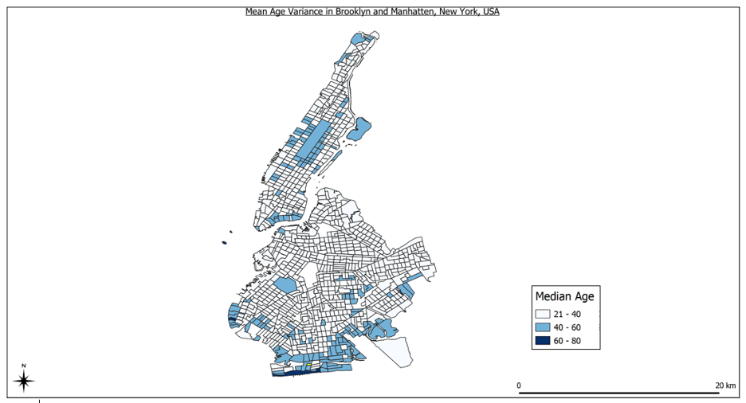

Jim Calvin, president of the New York Association of Convenience Stores, told CNN on Friday that there has been a lot of confusion and anxiety about the ban from members.
"The biggest problem right now is the shortage and rising cost of the paper bags that were supposed to be the inexpensive alternative to plastic for consumers who neglect to bring their own reusable bag," said Calvin.

Graph comparing the approximate time that the Covid-19 virus can survive on different materials.
Clearly displaying that it survives the shortes on cardboard especially in comparison to plastic.
This map displays who we are trying to target our resources to. We want these neighborhoods to have all essential corrugated materials because the people in these neighborhoods are not shopping but are being saved by heroes who are helping others in need. We want to supply the volunteers with resources that are environmentally friendly, are safer against the virus, and are stronger and sturdier than the average plastic bag.
Corrugated boxes are more sustainable, sturdy, and spacious then plastic bags, and can be made readily available for the people in need.
Places with a median age over 60: Census tracts: 352 52 360 1
A Census Tract is an area roughly equivalent to a neighborhood established by the Bureau of Census for analyzing populations. They generally encompass a population between 2,500 to 8,000 people.